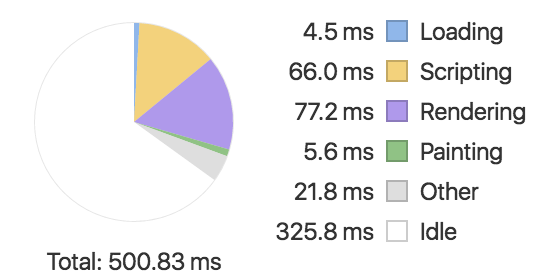
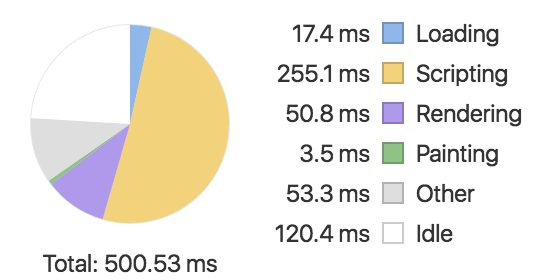
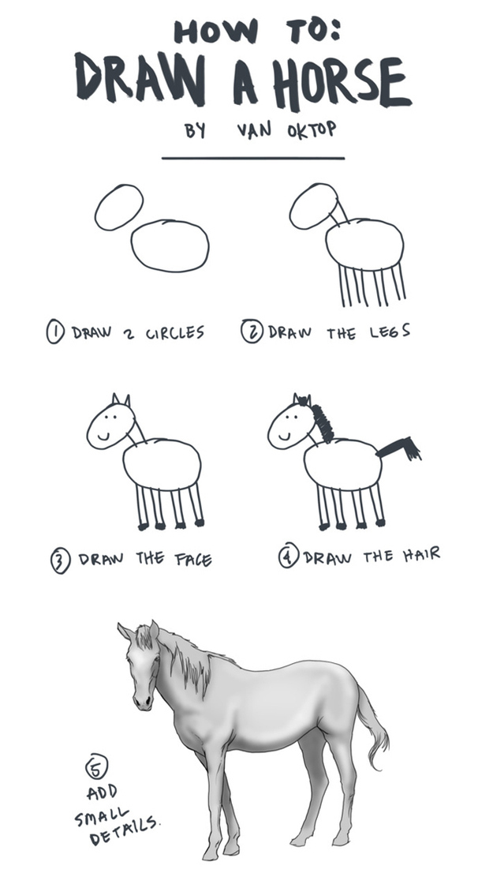
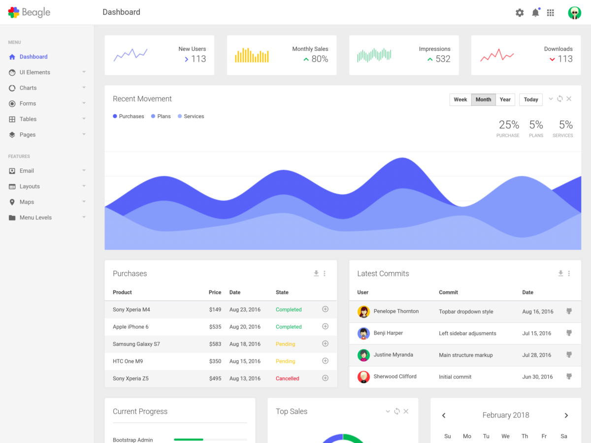
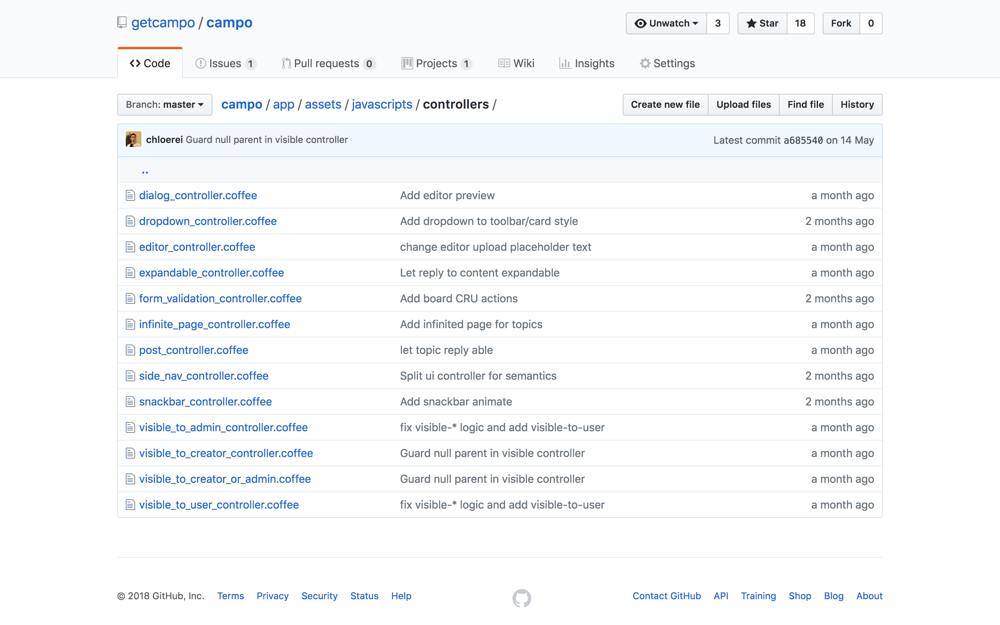

Stimulus.js
谦虚的 JavaScript 框架
“〇〇是未来的趋势。”
十年前
- SOA 会成为主流
- Flash 网站是未来的趋势
- 所有网站都会用 Ruby on Rails 重写
今天
- 微服务会成为主流
- 前后端分离是未来的趋势
- 一切能被 JavaScript 实现的都会被 JavaScript 重写
rabbit vs turtle
https://www.youtube.com/watch?v=frm0Hga3lO4
Rails Frontend
- 2011-08-31 Assets Pipeline
- 2013-06-25 Turbolinks
- 2016-06-30 Turbolinks for Android/iOS
- 2017-04-27 Yarn/Webpacker
- 2018-01-03 Stimulus
谦虚的 JavaScript 框架
- 不接管整个前端（不处理页面渲染）
- 跟服务端渲染良好协作
- 兼容 Turbolinks
* 基于 Turbolinks 的跨平台开发
Ruby China
|  |  |
| Turbolinks | No Turbolinks |
Turbolinks 环境下如何写 JavaScript？
$(document).ready(function() {
$('#btn').on('click', function() {} );
});
🙅 错误
$(document).on('turbolinks:load', function() {
$('#btn').on('click', function() {} );
});
🤦 怪异
$(document).on('click', '#btn', function() {} );
$(document).on('click', '[data-behavior~="btn"]', function() { });
🙎 还行
Bootstrap
问题
- 太多绑定事件的方式。
- 缺乏模块化。
- 太多全局绑定。
可选方案：Custom Element
class AppDrawer extends HTMLElement {...}
window.customElements.define('app-drawer', AppDrawer);
可选方案：MutationObserver
// Create an observer instance linked to the callback function
var observer = new MutationObserver(callback);
// Start observing the target node for configured mutations
observer.observe(targetNode, config);
// Later, you can stop observing
observer.disconnect();
Stimulus.js 基于 MutationObserver
解决的问题
- 规范化
- 模块化
- 避免全局绑定

$ npm install stimulus
(function (window) {
'use strict';
window.application = Stimulus.Application.start()
})(window);
|  |
Stimulus • TodoMVC |
优点
- 与服务端渲染配合良好。
- HTML 元素和功能的映射很直观。
- 学习门槛低。
缺点
- 需要前端渲染时变得复杂。
- Controller 之间通信困难。
- 不适合管理大量客户端状态。
| Framework | Code Lines |
|---|---|
| Vanilla JS | 948 |
| React | 493 |
| Angular | 371 |
| Stimulus | 240 |
| Vue | 170 |
| Stimulus | Vue |
|---|---|
| 服务端渲染 | 客户端渲染 |
| 交互简单 | 交互复杂 |
| 客户端状态少 | 客户端状态多 |
哪里可以用上 Stimulus.js
Admin & Dashboard
github.com/getcampo/campo
Stimulus 提供一种选择
- 不需要一开始就学习一个重型前端框架
- 不需要一开始就将开发人员分成前端后端
Does it scale?
“我们的应用跑在一百台服务器上。”
“是不是性能不好？”
“我们团队有一百个开发人员。”
“太棒了，怎么做到的？”
使用合适的工具做合适的事。